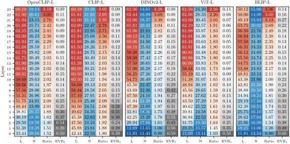
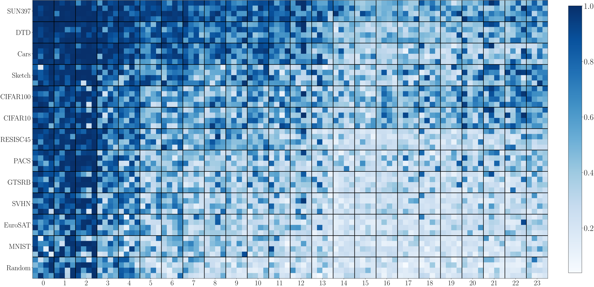
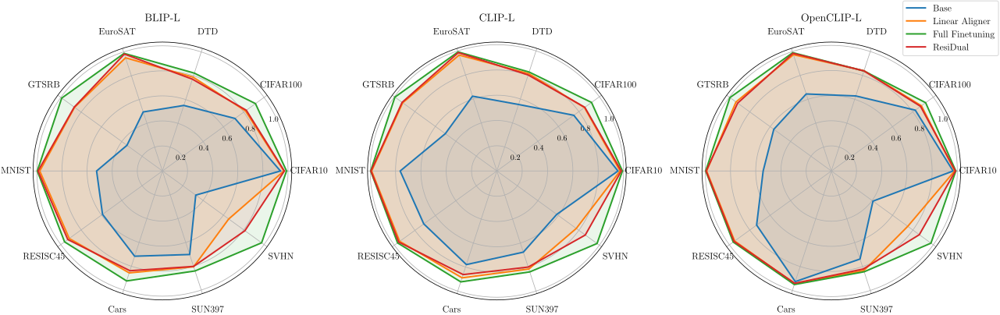

ResiDual Transformer Alignment with Spectral Decomposition
Reading transformer residual streams as low-dimensional, specialized geometry — and panning the task-relevant signal out of the noise
When examined through the lens of their residual streams, a puzzling property emerges in transformer networks: residual contributions such as attention heads sometimes specialize in specific tasks or input attributes. We analyze this in vision transformers through the spectral geometry of residuals, linking specialization to the intrinsically low-dimensional structure of head representations and showing that the roles of their principal components stay stable across input distributions. In vision-language models, better alignment between text and specialized heads improves zero-shot classification — a link that holds across pre-training data, network sizes, and objectives. We turn this into ResiDual, a spectral reweighting of the residual stream that, much like panning for gold, washes away noise from irrelevant principal components and amplifies task-relevant ones, reaching fine-tuning-level performance with an interpretable, parameter-efficient transformation across 70 network–dataset combinations (7 models, 10 datasets).
Introduction
In a modern transformer, the final output is a simple linear read-out of the residual stream (up to LayerNorm), and that stream accumulates information additively — drawing a contribution from each attention head, each MLP, and the input embedding (Elhage et al. 2021). Writing the output \mathbf{Y} as the sum of all residual units \mathbf{U}_i makes the structure explicit:
\mathbf{Y} = \sum_{i=1}^{|\mathcal{U}|}\mathbf{U}_i = \mathbf{X}_0 + \sum_{i}\mathbf{H}_i + \sum_{j}\mathbf{M}_j,
with \mathbf{H}_i the attention heads, \mathbf{M}_j the MLPs, and \mathbf{X}_0 the input embedding.
A puzzling property of these units is that they specialize: individual heads attend to specific attributes or solve specific sub-tasks, much as has been observed in language models (Gandelsman et al. 2024). This raises a question. If the output mixes every unit together, are all of them needed for a given task — or do some inject signal that obscures the task-relevant information? We use this to define two notions: a unit is task-irrelevant if deactivating it leaves performance unchanged, and noise if deactivating it improves performance by removing a misaligned signal.
This paper studies that question through the latent geometry of residual units, and turns the answer into a method.
The geometry of residual units
We focus on attention heads, since prior work shows their specialization most clearly; MLPs mix many heads by design and are more entangled. Two geometric facts drive everything that follows.
Heads are low-dimensional. Although each head is linearly embedded into the full-width residual stream, its representations occupy a far lower intrinsic dimensionality (I_d) than that ambient space. Measuring I_d with a linear estimator (PCA, the number of components explaining 99% of variance) and a nonlinear one (TwoNN (Facco et al. 2017)) across five ViT-Large encoders — OpenAI CLIP (Radford et al. 2021), OpenCLIP (Cherti et al. 2023), BLIP (Li et al. 2022), ViT (Dosovitskiy et al. 2021), and DINOv2 (Oquab et al. 2024) — fed 80,000 class-stratified ImageNet images reveals a consistent picture (Figure 2).

The takeaway is that early heads are essentially linear and low-dimensional, while heads grow steadily more nonlinear toward the output — yet even in late layers a single direction still carries a non-trivial share of the variance.
Specialization lives in the principal components. Building on TextSpan (Gandelsman et al. 2024), which decomposes a head’s representation against a dictionary of CLIP text encodings, we connect that procedure to the classical Matching Pursuit family (Mallat and Zhang 1993) — specifically Simultaneous Orthogonal Matching Pursuit (Tropp et al. 2006). Running the per-vector variant (Orthogonal Matching Pursuit (Pati et al. 1993)) on the first principal component of each head and comparing the five text descriptions it selects to TextSpan’s, the two often agree closely: for some heads the first component alone captures nearly all of the head’s specialized semantics, while for others the role is spread across several components.
Why the spectral view. Because head roles concentrate in a few principal components, comparing bases rather than samples is the natural way to ask whether specialization is stable — and it sidesteps the need to align individual data points across datasets of different sizes.
Specialization is stable across datasets. To test whether these roles generalize, we introduce a spectral cosine similarity between two sets of \ell_2-normalized principal components \mathcal{S}_1 = \{\mathbf{u}_i\} and \mathcal{S}_2 = \{\mathbf{v}_j\}, with optional weights w_1^i, w_2^j (e.g. their singular values), inspired by principal angles (Björck and Golub 1973). For n = 1, \dots, \min(k_1, k_2) we greedily pick the most-aligned remaining pair of components and weight its cosine by both singular values:
s_n = \Bigg[\max_{\substack{i \notin \{i_1,\dots,i_{n-1}\}\\ j \notin \{j_1,\dots,j_{n-1}\}}} \mathbf{u}_i^\top \mathbf{v}_j\Bigg]\, w_1^i\, w_2^j .
Aggregating these matched alignments and normalizing to [0, 1] gives the similarity measure:
\mathrm{sim}(\mathcal{S}_1, \mathcal{S}_2) = \sqrt{\frac{\sum_{n=1}^{\min(k_1, k_2)} s_n^2}{\sum_{n=1}^{\min(k_1, k_2)} (w_1^n w_2^n)^2}} .
Crucially, this operates in the dual spectral space, so it needs no sample-level correspondence between the datasets being compared. Comparing each encoder’s head bases on 14 datasets against its ImageNet bases, the dataset ordering is remarkably consistent across encoders — the mean correlation between per-dataset similarity profiles across models is 0.97 (Figure 3). Early-layer heads are nearly identical everywhere (low-level feature extractors), while in late layers only a few heads stand out per dataset — exactly where specialization concentrates.

Inspecting standout heads with SOMP gives interpretable, dataset-specific roles — for example, a late head specialized on seasons is highly active on scenery datasets like EuroSAT, while a grayscale head separates ImageNet from its sketch variant.
ResiDual alignment
If the information a task needs already lives in a few specialized units, we should be able to improve a frozen zero-shot classifier by manipulating the residual rather than retraining the model.
Coarse check: are some heads already aligned? First we reweight whole heads and keep only the top 5%, scored by one of three strategies — Unsupervised (U) (a head’s Pearson correlation with the full output), Task-conditioned Unsupervised (U|T) (the same, restricted to the task’s text subspace, following the CompAttribute metric of Balasubramanian et al. (2024)), and Supervised (S) (the head’s own downstream performance). Against controls — all heads (H), random selection (R, averaged over 10 seeds), the unmodified model (B), and a continuously Optimized weighting (O) — keeping just the top 5% of heads is strikingly effective (Table 1).
| Dataset | U | U|T | S | R | H | B | O |
|---|---|---|---|---|---|---|---|
| CIFAR10 | 0.96 | 0.96 | 0.96 | 0.59 | 0.94 | 0.97 | 0.98 |
| CIFAR100 | 0.80 | 0.78 | 0.79 | 0.38 | 0.76 | 0.82 | 0.84 |
| Cars | 0.92 | 0.92 | 0.93 | 0.39 | 0.89 | 0.93 | 0.93 |
| DTD | 0.59 | 0.59 | 0.59 | 0.29 | 0.54 | 0.63 | 0.69 |
| EuroSAT | 0.64 | 0.64 | 0.67 | 0.34 | 0.55 | 0.64 | 0.95 |
| GTSRB | 0.55 | 0.56 | 0.55 | 0.20 | 0.49 | 0.56 | 0.75 |
| MNIST | 0.74 | 0.84 | 0.85 | 0.25 | 0.41 | 0.54 | 0.97 |
| RESISC45 | 0.70 | 0.69 | 0.70 | 0.33 | 0.63 | 0.73 | 0.86 |
| SUN397 | 0.70 | 0.69 | 0.71 | 0.27 | 0.59 | 0.74 | 0.76 |
| SVHN | 0.48 | 0.57 | 0.53 | 0.24 | 0.41 | 0.41 | 0.70 |
| Average | 0.71 | 0.73 | 0.73 | 0.33 | 0.62 | 0.70 | 0.84 |
The unsupervised score (U) already lands near or above the base model, since core task information tends to sit in the first few principal components of the output; conditioning on the task (U|T) helps only slightly, except on SVHN. About 90% of the task alignment comes from heads alone (the H–B gap is small), and the optimized weighting (O) sometimes nearly doubles the base performance — the task-relevant signal was already in the residual, just hidden.
ResiDual: spectral reweighting. Rather than reweight whole heads, ResiDual operates within each unit at the spectral level. Given a unit \mathbf{X} with principal-component basis \boldsymbol{\Phi} and mean \boldsymbol{\mu}, it applies an anisotropic, learnable rescaling of the components:
\mathrm{RD}_{\boldsymbol{\Phi},\boldsymbol{\mu}}(\mathbf{X}, \boldsymbol{\lambda}) = \boldsymbol{\Phi}^{-1}\,\mathrm{diag}(\boldsymbol{\lambda})\, \boldsymbol{\Phi}\,(\mathbf{X}-\boldsymbol{\mu})^\top,
with the learnable vector \boldsymbol{\lambda} holding one weight per principal component. Applied independently to every unit and summed back into the output, this is a simple spectral scaling that nonetheless induces rich dynamics in the output space — amplifying task-relevant components and damping the rest.
The PCA bases \boldsymbol{\Phi} and means \boldsymbol{\mu} are estimated once, on ImageNet, and reused for every downstream dataset — only the per-component weights \boldsymbol{\lambda} are learned.
We compare three configurations — RD (all components of all units), RD^* (heads only, components truncated to 90% of variance), and RD^Y (applied to the output encoding directly) — against the base model, a trained linear aligner (Lin) on the output, and full fine-tuning as an empirical upper bound. The radar plots show ResiDual matching, and occasionally beating, the linear aligner across datasets and models (Figure 4).

The numbers make the parameter efficiency concrete (Table 2). ResiDual matches the linear aligner on average while using far fewer parameters, and RD^* — heads only, truncated components — stays competitive at roughly a third of RD’s parameter count. SVHN is the telling case: there RD beats the linear aligner by about 10% and RD^Y falls far behind, indicating the task-relevant signal is simply not present at the output level and must be recovered from inside the residual units.
| Dataset | BLIP-L Lin | BLIP-L RD | CLIP-L Lin | CLIP-L RD | OpenCLIP-L Lin | OpenCLIP-L RD |
|---|---|---|---|---|---|---|
| CIFAR10 | 0.97 | 0.97 | 0.97 | 0.98 | 0.98 | 0.98 |
| CIFAR100 | 0.82 | 0.83 | 0.85 | 0.86 | 0.88 | 0.88 |
| DTD | 0.79 | 0.77 | 0.81 | 0.80 | 0.84 | 0.84 |
| EuroSAT | 0.95 | 0.98 | 0.97 | 0.99 | 0.97 | 0.98 |
| GTSRB | 0.87 | 0.87 | 0.92 | 0.92 | 0.94 | 0.92 |
| MNIST | 0.98 | 0.99 | 0.99 | 0.99 | 0.99 | 0.99 |
| RESISC45 | 0.92 | 0.93 | 0.95 | 0.96 | 0.95 | 0.95 |
| Cars | 0.86 | 0.84 | 0.89 | 0.86 | 0.94 | 0.94 |
| SUN397 | 0.80 | 0.80 | 0.82 | 0.80 | 0.83 | 0.82 |
| SVHN | 0.65 | 0.81 | 0.77 | 0.86 | 0.75 | 0.86 |
| Average | 0.86 | 0.88 | 0.89 | 0.90 | 0.91 | 0.92 |
| #params | 65.8k | 30.7k | 590k | 43k | 590k | 43k |
Conclusion
Reading the residual stream as low-dimensional, specialized geometry explains why a tiny spectral edit can recover fine-tuning-level alignment: the task-relevant signal is already present in a few principal components of a few specialized heads, merely obscured by everything summed around it. ResiDual makes that explicit, panning the gold out of the residual with an interpretable, parameter-efficient transformation. Its main limitation is the flip side of its mechanism — when the needed signal is genuinely absent from the residual units, there is nothing to amplify. References appear in the margin; a copyable BibTeX entry for this paper is generated below.
Citation
@article{basile2024,
author = {Basile, Lorenzo and Maiorca, Valentino and Bortolussi, Luca
and Rodolà, Emanuele and Locatello, Francesco},
title = {ResiDual {Transformer} {Alignment} with {Spectral}
{Decomposition}},
journal = {Transactions on Machine Learning Research},
date = {2024-10-31},
url = {https://openreview.net/forum?id=z37LCgSIzI}
}